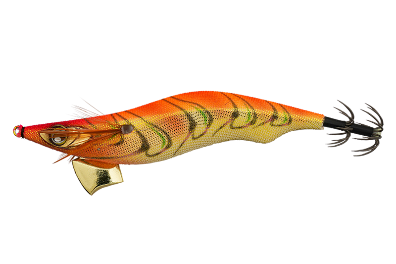
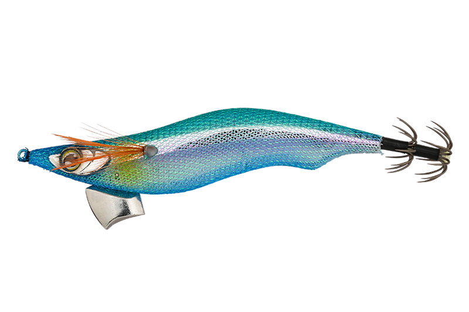
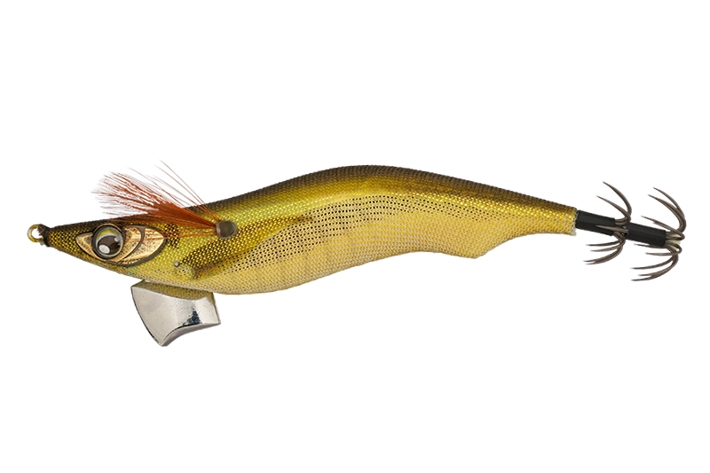
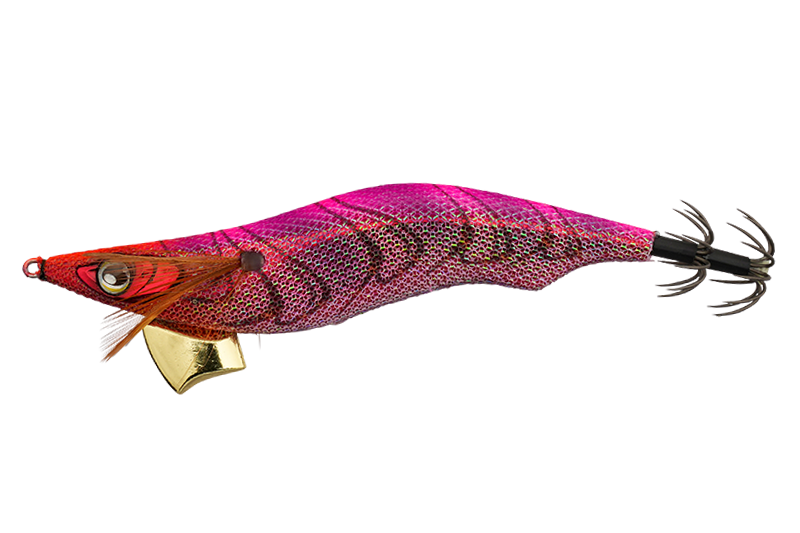

ゲキダキ カミナリ
（GEKIDAKI KAMINARI）
ゲキダキ カミナリ（GEKIDAKI KAMINARI）はJACKALL（ジャッカル）のエギです。
エギに欠かせない3大要素「飛距離・ダート・フォール」を、アングラーのレベルを問わず再現できるエギとして2026年に登場。専用シンカーが生む鋭く幅のある「カミナリダート」で、初心者は動かしやすく、上級者は思いのままに操れるのが最大の魅力です。

画像出典:ジャッカル公式HP
スペック
- メーカー
- JACKALL（ジャッカル）
- タイプ
- エギ（シンキング）
- サイズ／自重
- 3号：16g／3.5号：22g
- フォール速度
- 約4秒/m（3号・3.5号）
- カンナ
- 0.7mmワイヤー・10本2段傘
- ターゲット
- アオリイカ
- 価格
- 3号：1,320円／3.5号：1,375円（税込）
- 発売
- 2026年8月
▼今すぐチェック

ゲキダキ カミナリの特徴
誰でもどんなしゃくりでもダートする。飛距離・ダート・フォールの3大要素を高いレベルで実現したエギ
-
専用シンカーが生む鋭く幅のある「カミナリダート」
誰でもどんなしゃくりでもダートすることを目指して改良を重ねた専用シンカーを搭載。ショートピッチの細かい連続ダートから、スラックジャークでの幅広いダートまで対応する。
-
カウンターウエイトで安定した飛距離
キャストにコツが必要な重心移動はあえて搭載せず、テール側にウエイトを固定。常に安定した飛行姿勢をキープし、キャストごとの飛距離のばらつきを抑える。
-
マッスルキールでぶれないフォール
カウンターウエイトの重量増加分の浮力をマッスルキールで確保し、フォール姿勢も安定。フリーフォールでもテンションフォールでも揺れやブレを抑え、イカに違和感を与えない。
ゲキダキ カミナリの使い方
基本はキャストして着底させ、しゃくってダートさせてからフォールで抱かせる。専用シンカーのおかげで、細かいショートピッチジャークでも、ラインスラッグを使ったスラックジャークでもしっかりダートする。
フォールは約4秒/m。フリーフォールでもテンションフォールでも姿勢が安定するので、しゃくった後はラインの変化に集中してアタリを取ります。
ゲキダキ カミナリの得意な状況
堤防や磯から、アオリイカを狙う秋・春のエギング全般が出番。
エギングを始めたばかりで「ダートがうまく出ない」と感じている人や、キャストの飛距離が安定しない人にも使いやすい1本です。
ワンポイント
同じ約4秒/mのフォールで3号と3.5号を使い分けられるので、イカのサイズやベイトの大きさに合わせてサイズを選ぶのがオススメです。
高強度の10本2段傘カンナは鋭いので、エギの付け替えやイカを外す時は指を刺さないよう注意しましょう。
ゲキダキ カミナリのサイズの使い分け
| サイズ | 自重／フォール速度 | 得意な場面 |
|---|---|---|
| 3号 | 16g／約4秒/m | 秋の新子シーズン・小さめのイカやベイトに合わせたい時 |
| 3.5号 | 22g／約4秒/m | 春の親イカシーズン・飛距離と存在感が欲しい時 |
ゲキダキ カミナリは3号・3.5号の2サイズ展開。どちらもフォール速度は約4秒/mにそろえてあるので、イカのサイズやシーズンに合わせてサイズだけを選べる。
オススメカラー
ゲキダキ カミナリは全10色展開。オススメのカラーを厳選して紹介します。

オレンジゴールドエギングの定番オレンジ×金テープ。朝マズメや晴れた日のパイロットカラーに。

ナジミブルー水になじむブルー系。澄み潮やスレたイカにナチュラルに見せたい時に。

キンアジUVアジを模したナチュラル系にUVをプラス。ベイトがアジの時に。

ローライトレッドマズメや曇りの日などローライト時に強いレッド系。
画像出典:ジャッカル公式HP
ゲキダキ カミナリに似ているルアー
-
 エギ王Kディープ
ヤマシタ
詳細はこちら＞
エギ王Kディープ
ヤマシタ
詳細はこちら＞
定番エギ王Kのディープタイプ。深場を攻めたい時はエギ王Kディープ、扱いやすさとダートのキレを重視するならゲキダキ カミナリと使い分けられる。
-
 エギ政改
DUO
詳細はこちら＞
エギ政改
DUO
詳細はこちら＞
DUOのエギ。アオリイカ狙いの3号クラスとして、ゲキダキ カミナリと選択肢が重なる1本。